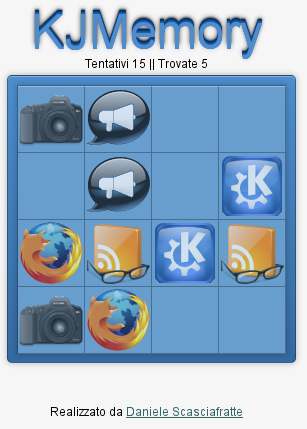

Selezione dei lavori realizzati durante il corso
Web & Interaction all'Istituto Quasar di Roma
2010-2012
|  | Il classico gioco del Memory realizzato in jQuery e CSS3 Provalo ora |
|---|
Obiettivo raggiunto perchè il motto "write less, do more" di jQuery è realtà
Realizzato sfruttando le conoscenze in ambito SEO per URL Rewrite e AJAX per il caricamento delle pagine
Lo scopo del gioco è quello di spostare delle torte da un rullo all'altro fino alla fine del percorso senza perderne una
Esercitazione grafica per l'apertura di un nuovo settore nel negozio di famiglia
Realizzata con Impress.js tramite mdpress per una rapida prototipazione
Scaricabile su GitHub